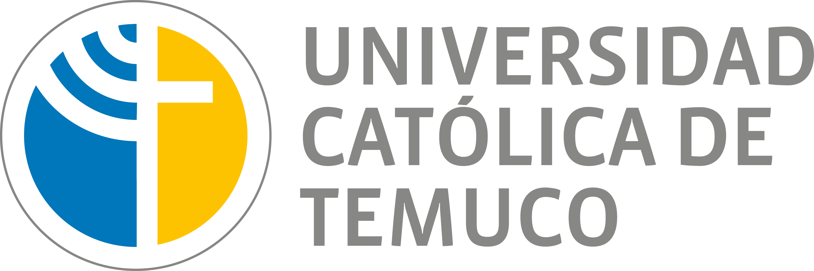
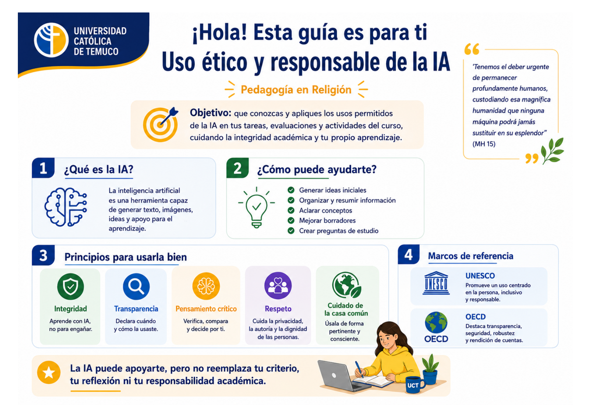
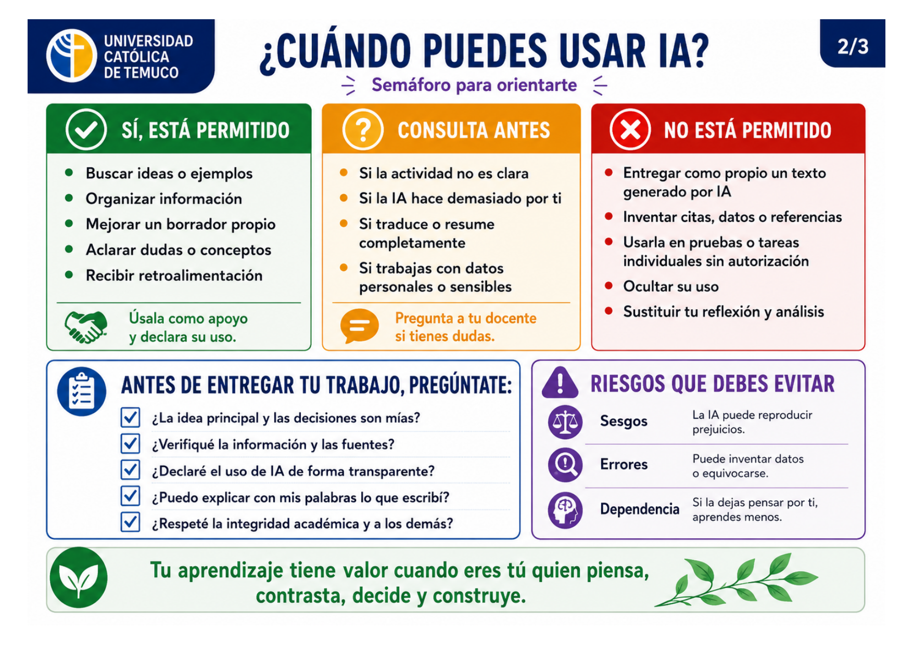
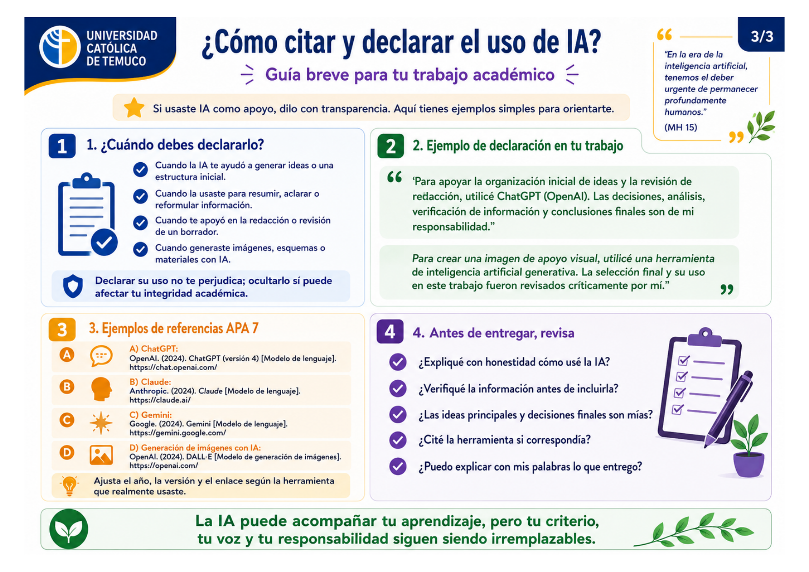

Integridad
Aprende con IA, no para ocultar el trabajo propio ni para presentar como tuyo lo que no construiste.

Pedagogía en Religión Católica UCTEstimado/a estudiante, esta guía tiene por objetivo ayudarte a revisar los usos permitidos de IA en las actividades del curso, declarar su uso con transparencia, proteger tu autoría y fortalecer tu aprendizaje en el marco de la formación pedagógica y cristiana.
Antes de usar una herramienta de IA, revisa si tu decisión respeta la integridad académica, tu responsabilidad personal y la dignidad de las personas.
Aprende con IA, no para ocultar el trabajo propio ni para presentar como tuyo lo que no construiste.
Declara qué herramienta usaste, con qué propósito y qué decisiones finales tomaste tú.
Contrasta datos, fuentes y argumentos. La IA puede equivocarse, inventar referencias o reproducir sesgos.
No ingreses datos personales, sensibles o pastorales. Cuida la privacidad, la autoría y la dignidad de otros.
Usa esta matriz como primera orientación. Si la instrucción de tu docente indica algo distinto, siempre prevalece esa indicación.
Selecciona una actividad frecuente del curso y revisa usos adecuados, límites y un ejemplo de prompt que puedes adaptar.
Puedes pedir ideas, preguntas orientadoras o revisión de claridad. No delegues la tesis, la argumentación ni la conclusión final.
Utilicé ChatGPT para recibir retroalimentación sobre la organización de mi borrador. La tesis, el análisis, la selección de fuentes y las conclusiones son de mi responsabilidad.
La IA puede ayudarte a formular preguntas de lectura, pero no debe reemplazar el análisis contextual, exegético, doctrinal ni pastoral que solicita la actividad.
No aceptes citas bíblicas, patrísticas, magisteriales o académicas sin revisar el documento original. La IA puede fabricar referencias plausibles.
Puedes pedir ideas de actividades, secuencias didácticas o formas de evaluación, siempre adaptándolas al currículo, contexto del curso y criterios del docente.
Selecciona, adapta y justifica las actividades. Una propuesta de IA no conoce por sí sola a tus estudiantes, el clima de aula ni el sentido pastoral de la intervención.
Es válido usar IA para ordenar contenidos, proponer títulos o crear imágenes de apoyo, siempre que declares su uso y revises pertinencia, sesgos y exactitud.
Para crear una imagen de apoyo visual utilicé DALL-E. La selección final, edición y pertinencia pedagógica fueron revisadas críticamente por mí.
Marca cada punto. Si alguno queda pendiente, revisa tu trabajo antes de subirlo.
Cuando la IA influyó en tu proceso o producto, declara su uso. Si incluyes contenido generado o una herramienta relevante para el trabajo, agrega la referencia correspondiente y adapta año, versión, fecha y enlace según el caso real.
Estos textos pueden copiarse y adaptarse al final del trabajo, en una nota metodológica o en el apartado indicado por tu docente.
Utilicé una herramienta de IA generativa para explorar preguntas iniciales y posibles enfoques del tema. Seleccioné, descarté y reformulé las ideas según los objetivos del curso y las fuentes revisadas.
Utilicé IA para recibir sugerencias de claridad, coherencia y estilo sobre un borrador escrito por mí. No delegué la tesis, los argumentos ni las conclusiones.
Utilicé IA para elaborar preguntas de estudio y un esquema preliminar. Contrasté la información con las lecturas del curso y corregí los elementos imprecisos.
Utilicé una herramienta de generación de imágenes para crear material visual de apoyo. Revisé críticamente la pertinencia, los sesgos y la coherencia con el mensaje pedagógico y teológico del trabajo.
Responde estas situaciones. La meta no es memorizar reglas, sino aprender a decidir con transparencia, criterio y responsabilidad.
Estas láminas resumen la guía para compartirla, imprimirla o usarla como apoyo rápido en clases. La página amplía estos contenidos con ejemplos, citación, toma de decisiones y autoevaluación.



Esta guía integra orientaciones institucionales, marcos internacionales y criterios de integridad académica para que el uso de IA sea transparente, formativo, responsable y centrado en la persona.